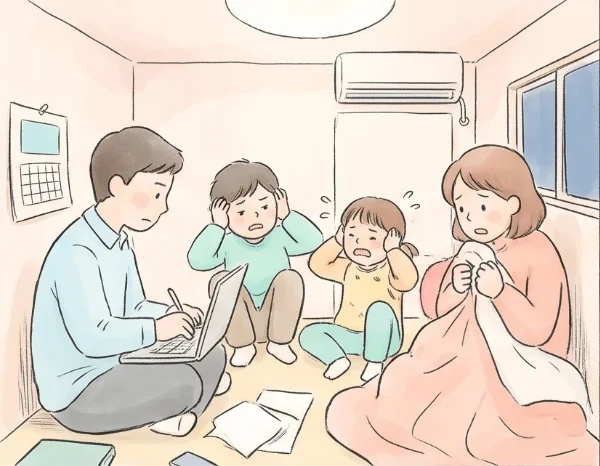
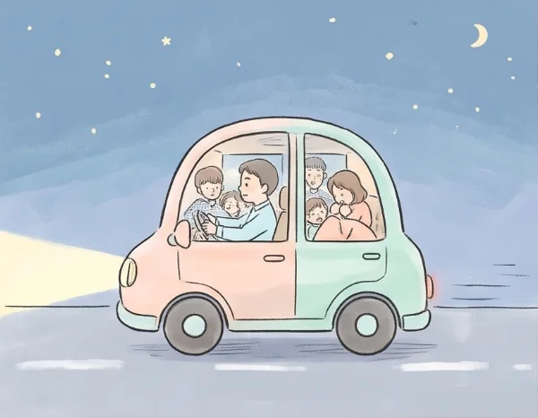
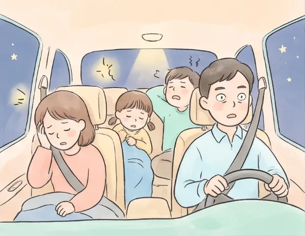
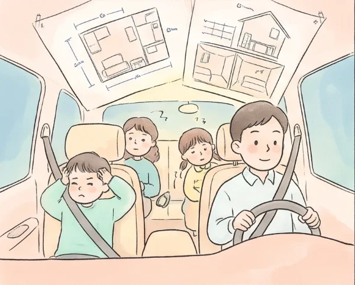
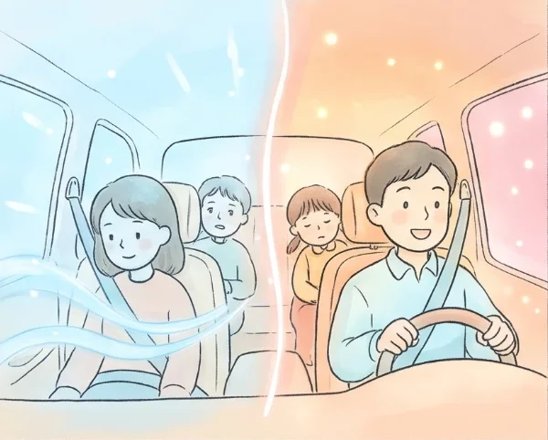
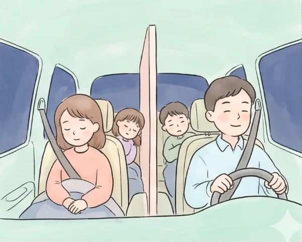

그림으로 옮기면
운전석은 시원하고 밝은 서재, 뒷좌석은 따뜻하고 어두운 침실이 돼요. 칸막이는 없고, 자리별 열선·바람·조명이 벽 역할을 해요.
1차본의 "공간 나누기"에 "조작 기록 = 몸의 신호"를 더했습니다. 구현 가능성은 Pleos 공개 문서 기준입니다.






운전석은 시원하고 밝은 서재, 뒷좌석은 따뜻하고 어두운 침실이 돼요. 칸막이는 없고, 자리별 열선·바람·조명이 벽 역할을 해요.
원룸에선 누가 온도를 바꿨는지 알 수 없어요. 방을 나누면 모든 조작이 좌석 단위로 그 사람에게 붙어요.
경고가 아니라 "평소와 달라졌어요" 알림이에요. 원인은 단정하지 않고 질문으로 덧붙여요. 곡선은 설명용 예시예요.
가족이 같은 차를 쓰므로 좌석 메모리 번호와 운전 패턴으로 사람을 나눠, 각자의 평소와만 비교해요. 다른 차와의 비교는 "그 길이 원래 어려웠나"를 빼는 데만 써요.
왼쪽은 들어오는 신호, 오른쪽은 기능입니다. 항목을 누르면 연결만 남습니다.
선 색은 그 기능의 구현 가능성입니다. 초록 신호 몇 개만으로 v3의 핵심 기능이 대부분 완성됩니다.
뒷좌석 아이 둘, 동승석 배우자. 곡선은 설명용 예시이며 측정값이 아닙니다.
이번에 뺀 것: 벨트 체결 시간(바로 매는 사람이 많아 오측치 과다), 경고 해소 기간·하이패스 음량(과적합), 가족별 자동 설정(이미 있는 기능 → 사람 구분의 기반으로만 사용), 야간 운전 저하(시야 보상 축에 합침).
여러 차의 데이터로 보정하는 부분은 앱 코드로 만들 수 있지만, 효과는 서버와 다수 사용자가 생긴 뒤에야 나옵니다.
에뮬레이터로는 앱 로직만 검증됩니다. 실내 온도·속도·위치 입력 카드가 없어서, 잠들기나 CO₂ 같은 실제 효과는 실차에서만 확인됩니다.